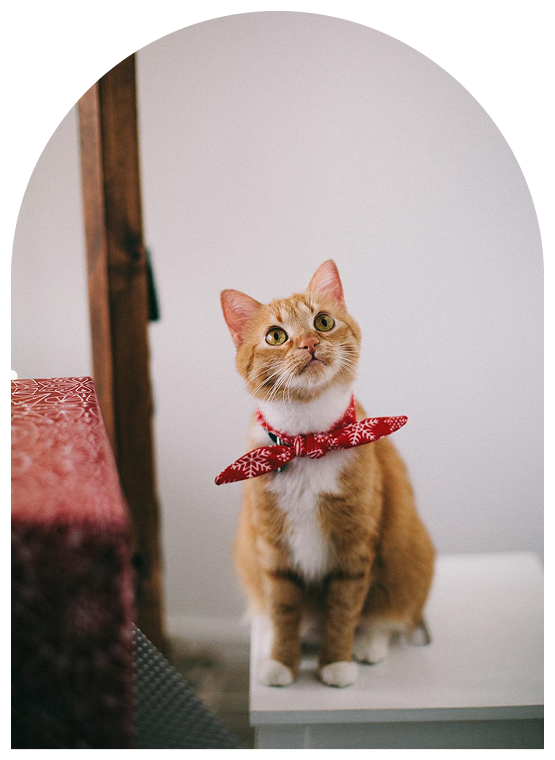
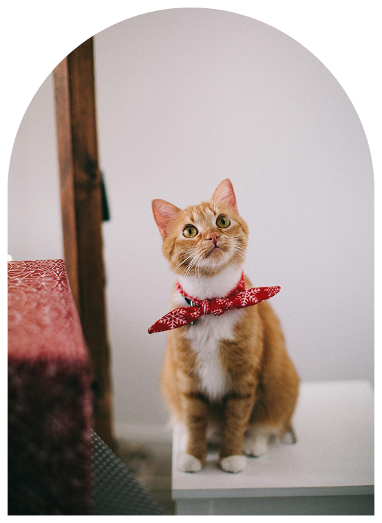
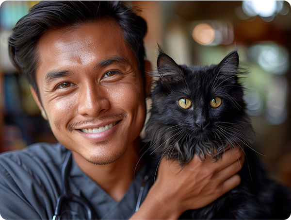

Professional, Loving and Reliable Cat Care When You Can’t be There
Di Joy Cat, kami berkomitmen untuk memberikan perawatan terbaik bagi kucing kesayangan Anda. Kami menawarkan berbagai layanan yang dirancang khusus untuk memastikan kesehatan dan kebahagiaan kucing Anda.
 


Our Services
Klinik Kucing
Tim dokter hewan kami yang berpengalaman siap memberikan perawatan medis terbaik untuk kucing Anda. Kami menyediakan layanan vaksinasi, pemeriksaan rutin, pengobatan penyakit, dan konsultasi kesehatan.
Daycare & Grooming
Butuh tempat yang aman dan nyaman untuk menitipkan kucing Anda saat Anda sibuk? Daycare kami adalah solusinya. Selain itu, layanan grooming kami akan membuat kucing Anda tetap bersih dan cantik.
Adopsi Kucing
Bantu kami menemukan rumah baru yang penuh cinta untuk
kucing-kucing yang membutuhkan.
Lihat kucing-kucing yang siap
diadopsi dan jadilah bagian dari cerita bahagia mereka. Lihat
kucing-kucing yang siap diadopsi
Tentang Kami
Joy Cat didirikan oleh kakak beradik, dr. Bima Sakti Gemilang dan dr. Andromeda Gemilang. Datang dari keluarga pecinta kucing dan sempat memelihara hampir dari 100 ekor kucing, kami memahami bahwa kucing bukan hanya sekadar hewan peliharaan, tetapi juga anggota keluarga yang berharga. Oleh karena itu, kami bertekad untuk menyediakan layanan yang mendukung kesehatan dan kebahagiaan bagi kucing dan para pemiliknya.
Dokter Bima Sakti Gemilang memperoleh gelar dokter hewan dari Michigan State University. Di Joy Cat, ia saat ini bekerja sebagai salah satu dari dua dokter hewan fulltime. Dia sangat bersemangat dalam memberikan perawatan pencegahan yang tepat kepada semua pasien, dan giat memberikan edukasi terkait kesehatan kucing kepada para pemilik kucing. Dr. Bintang juga sangat mahir dan unggul dalam operasi jaringan lunak.
Dokter Andromeda Gemilang, adik dari dr. Bima adalah Praktisi Tingkat Lanjut dalam Kedokteran Kucing dan memegang Keanggotaan Kolese Ilmuwan Hewan Indonesia untuk Kedokteran Kucing.
Opening Hours
Weekdays
08.00-17.00
Weekend
07.00-19.00
Kontak Cepat
0812-1234-5678
Alamat Kami
Jl. Radar Auri No.32d, Cisalak Ps., Kec. Cimanggis, Kota Depok, Jawa Barat 16452
Testimonials

It was my second time there. I believe my cat, Dusty had a good time there. Had a major timming and royal splash spa. The fur is still smooth after 2 weeks. They took great care of Dusty knowing that she is pregnant. Recommended!
Amelia Rose
Clean and nice for the cats. Grooming package is good too. We chose a special package for our cat🐱, Molly. Today we sent 6 cats for boarding. Love JoyCat service!
Niki Jasmine
Sent Casper for grooming and chose to try aromatic salt bath. She enjoyed the session and seems calmer and approachable compared to before 😍. The place is well kept and adhere to Covid 19 SOP. Really recommended!